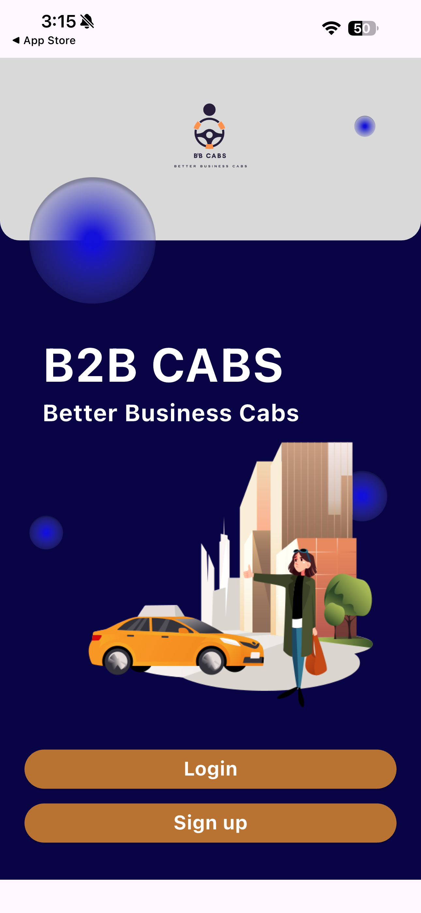
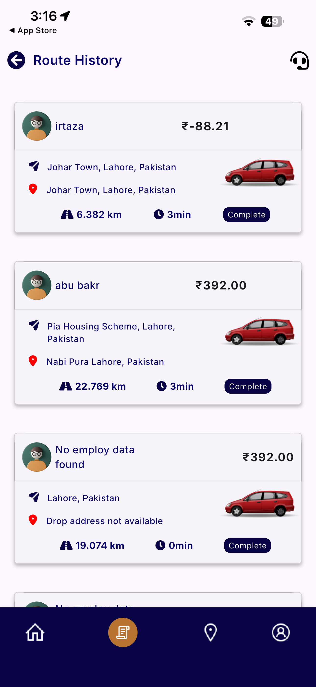
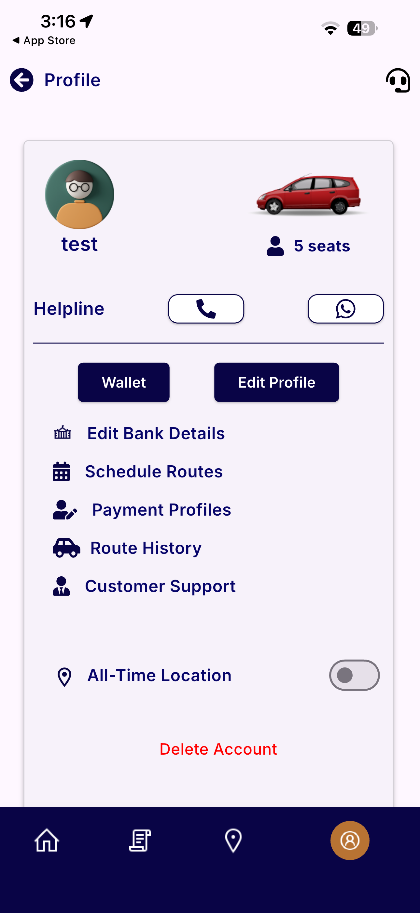

B2B Cabs — Corporate Fleet Platform
A dual-application corporate transit system built to automate enterprise employee pick-and-drop logistics, featuring real-time vehicle tracking, turn-by-turn route navigation, and instant dispatch notifications.
Interactive App Screens
Use the left and right navigation arrows to flip through live application interfaces







Project Overview & Problem Statement
Corporate transit logistics for medium to large enterprises often suffer from manual scheduling inefficiencies, opaque driver routes, and lack of real-time visibility for HR departments and employees.
The Solution: B2B Cabs delivers a two-sided architecture uniting corporate clients and commercial drivers. By utilizing Android Foreground GPS services, drivers broadcast uninterrupted high-precision telemetry, allowing company admins and passengers to track fleet vehicles in real time.
Technical Architecture & Key Features
Development Lifecycle & Milestones
Architecture Setup & Map Prototyping
Designed database schema, evaluated GPS background battery drain optimizations, and configured Google Cloud Maps SDK.
Driver & Company App Implementation
Built clean modular Provider state management, integrated REST endpoints with Dio, and established real-time vehicle broadcast streams.
QA & Store Deployments
Conducted extensive battery, memory, and field road tests before deploying both apps to the iOS App Store and Google Play Store.
Interested in building a similar platform?
Let's discuss requirements and architecture.